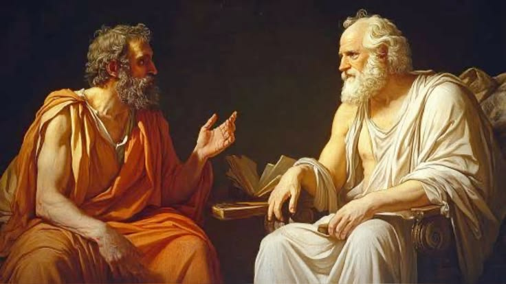

Tablonun arka planı sıradan bir dekor değildir. Raffaello'nun akıl hocası olan Donato Bramante'nin tasarımından esinlenen devasa, tonozlu yapı, inşası yeni başlamış olan yeni Aziz Petrus Bazilikası'nı andırır.
İhtişamlı kemerlerin iki yanında, felsefe okulunu izleyen iki önemli antik tanrı heykeli bulunur:
Bu devasa klasik mimari, insan aklının ulaştığı yüksek seviyeyi ve evrensel düzeni yansıtır.


Tüm kompozisyonun odak noktasında, Batı felsefesinin iki kurucu babası, yürüyerek tartışırken resmedilmiştir.
Sol tarafta, çıplak ayaklı ve erguvan/kırmızı pelerinli.
Sağ tarafta, kahverengi ve mavi cübbesiyle daha pratik giyimli.